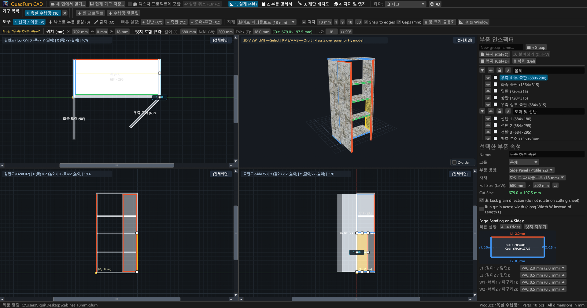
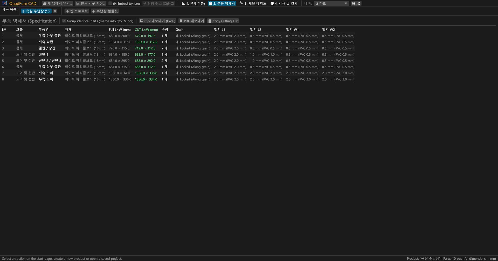
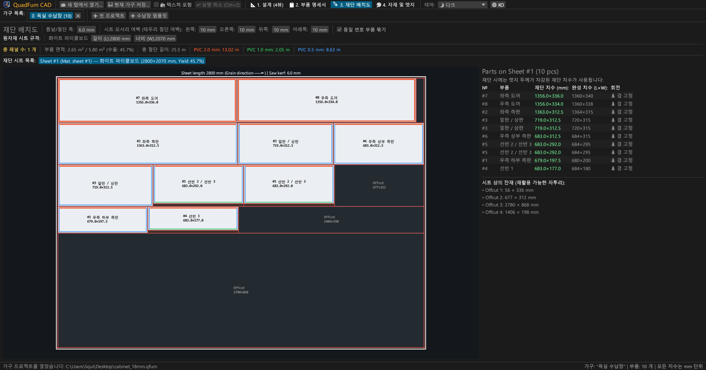
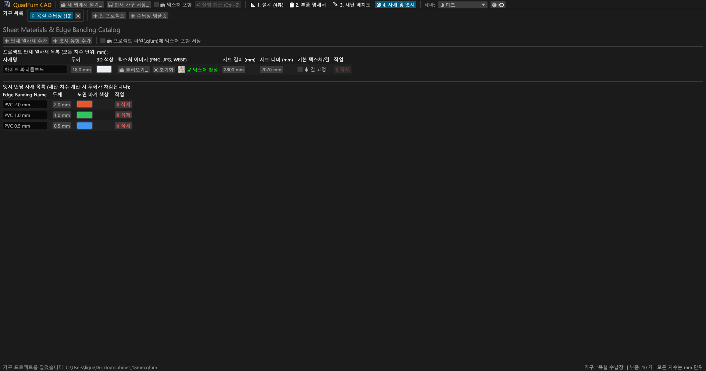
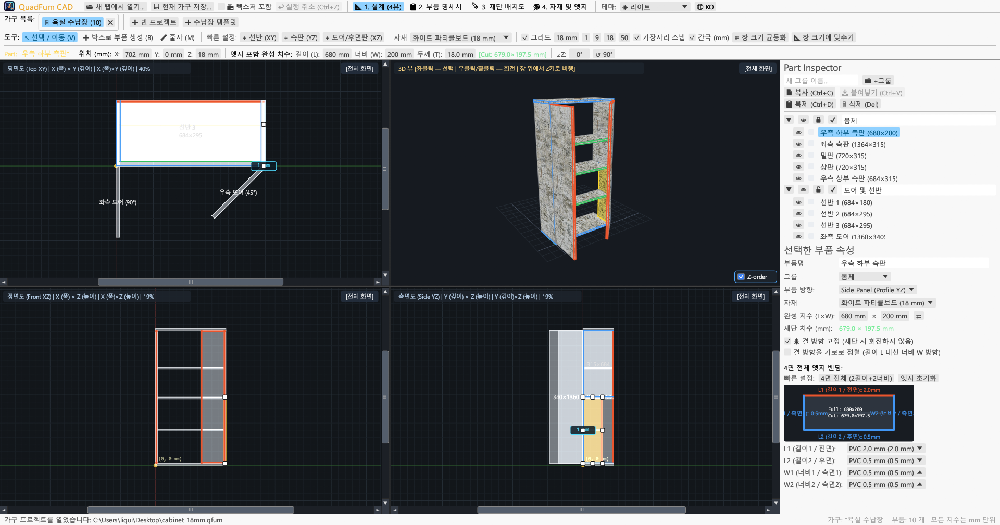
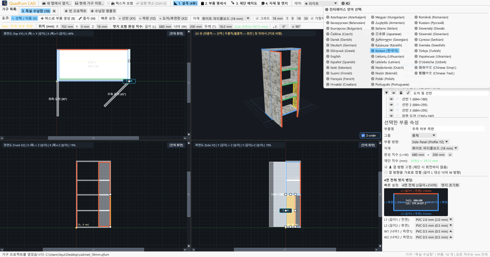

가구 제작 공방 및 공장을 위한 고성능 데스크톱 CAD. 4-뷰포트 동기화 설계, 사칙연산 수식 지원 치수 입력, 에지 두께 자동 공제, 최적 재단 배치.

4-뷰포트 연동 도면 작성, 정밀 수치 변환 제어, 판재 관통 재단 최적화를 하나로 통합했습니다.
평면도(XY), 정면도(XZ), 측면도(YZ) 및 3D 원근 뷰 동시 편집. 자석 스냅 및 실시간 간격 측정 치수 표시.
부품의 3차원 좌표(X, Y, Z), 크기(L × W × T), 각도(∠Z)를 직접 입력. 입력창에 600-4 또는 (800-36)/2 같은 수식 즉시 계산.
판재 사방 4면에 PVC/ABS 에지 밴딩(0.4~2.0 mm)을 지정하면 재단기용 순수 절단 치수를 자동으로 정확하게 산출.
나뭇결 방향, 톱날 두께(6.0 mm), 원판 테두리 다듬기 여유를 반영하는 고성능 재단 엔진. 사용 가능한 잔재 자동 기록.
여러 제품 탭을 동시에 작업. 프로젝트 간 부품 복사 및 붙여넣기(Ctrl+C / Ctrl+V) 시 자재 및 에지 속성 자동 전송.
인쇄용 A4 가로 규격 PDF 출력: 부품 명세서, 4-뷰포트 도면, 판재별 재단 배치도, 자재 및 에지 소요량(+15% 여유분 포함).





외부 런타임 설치가 필요 없는 단독 실행 파일.
아이콘이 포함된 포터블 실행 파일 (설치 불필요).
sudo apt install ./quadfurn_0.2.6_amd64.deb
Apple Silicon (M1–M4) 및 Intel x86_64를 모두 지원하는 Universal 번들.
| 키 / 조합 | 동작 설명 | 적용 범위 |
|---|---|---|
| V | 선택 / 이동 도구 (드래그 이동, 8개 조절점, 영역 박스 선택) | 2D 뷰포트 |
| B | 박스로 부품 생성 (현재 평면에서 드래그하여 패널 생성) | 2D 뷰포트 |
| M | 줄자 도구 (두 점 사이의 정밀한 거리 밀리미터 측정) | 2D 뷰포트 |
| Z | 1인칭 자유 비행 모드 (Z 키로 마우스 고정 후 WASD 이동) | 3D 뷰포트 |
| ← → ↑ ↓ | 그리드 간격만큼 부품 미세 이동 (Shift 누르면 2배 이동) | 2D 뷰포트 |
| Ctrl + C / V | 부품 복사 / 붙여넣기 (다른 제품 탭 간 지원) | 모든 탭 |
| Ctrl + D | 선택한 부품 오프셋 복제 | 현재 프로젝트 |
| Ctrl + S | 프로젝트를 .qfurn / .json 파일로 저장 | 현재 프로젝트 |
| Ctrl + Z | 실행 취소 (최대 40단계 내역 보관) | 현재 프로젝트 |
| Delete / Backspace | 선택한 부품 삭제 | 현재 프로젝트 |